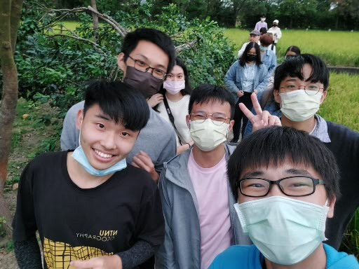

簡介 — 真的想不到該寫什麼了QAQ —
高宏杉
目前就讀於國立臺灣師範大學地理系
22歲，是一個愛上網、打遊戲的宅宅
中度咖啡癮患者
歡迎來到我的個人網頁！我是高宏杉，目前就讀於臺灣師範大學地理系。在測量公司的實習中，我不僅學到了豐富的專業知識，還培養了良好的團隊協作和解決問題的技能。這段經歷讓我更加堅信，地理資訊和技術的應用能夠深刻地影響我們的日常生活。我的興趣愛好涉及是軍事武器。這不僅僅是一種嗜好，更是我對軍事科技的深厚興趣。這些興趣激發了我對創新和技術進步的渴望。雖然我性格內向，但這使我成為一個細心和專注的人。我習慣在個人時間內深入思考和學習，這有助於我更好地理解和應對各種挑戰。
我的求學經歷始於土城國小，是我學習的起點。隨後進入土城國中，拓展了我的學科知識並參與了各種課外活動。華僑高中成為我學業生涯的另一個里程碑，我更深入地探索了專業和興趣領域，並培養了社交技能和團隊協作精神。然後，我進入了臺灣師範大學主修地理系，這裡不僅提供了專業知識，也激發了我對地球與人文環境的思考。在大學期間，我積極參與實習和研究專案，不斷挑戰自己，提升專業能力。这些學經歷讓我擁有豐富的知識和實踐經驗，培養了解決問題的能力和對學習的熱忱，成為我未來發展的堅實基礎。